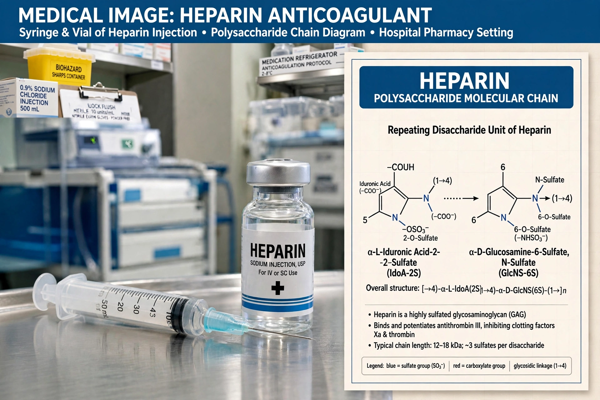

Heparin, also known as unfractionated heparin (UFH), is a medication and naturally occurring glycosaminoglycan. As a medication it is used as an anticoagulant (blood thinner), principally to treat and prevent deep vein thrombosis, pulmonary embolism, and arterial thromboembolism, and during cardiac surgery and dialysis. It was discovered in 1916 by Jay McLean, working in the laboratory of William Henry Howell at Johns Hopkins.

| Heparin | |
|---|---|
| Type | Glycosaminoglycan; anticoagulant |
| Routes | Intravenous, subcutaneous |
| Mechanism | Activates antithrombin III, inactivating thrombin and factor Xa |
| Antidote | Protamine sulfate |
Heparin binds to and greatly accelerates the activity of antithrombin III, which inactivates thrombin (factor IIa) and factor Xa, key enzymes of the coagulation cascade, reducing the formation of fibrin clots. Unfractionated heparin is a heterogeneous mixture of polysaccharide chains of widely varying length; low-molecular-weight heparins (such as enoxaparin), produced by fractionation, act predominantly against factor Xa and have more predictable dosing.
Heparin is given by injection in hospitals for acute coronary syndromes such as myocardial infarction, for venous thromboembolism, and to keep extracorporeal circuits — heart-lung machines and dialysis equipment — free of clots. Because blood flows through the coronary arteries is threatened by thrombosis in heart attacks, heparin is a standard early treatment. Its effect is monitored with the activated partial thromboplastin time (aPTT).
The main adverse effect is bleeding, which can be reversed with protamine sulfate. A serious complication is heparin-induced thrombocytopenia (HIT), an immune reaction in which antibodies against platelet factor 4–heparin complexes paradoxically cause clotting and a fall in platelet count. Long-term use can also cause osteoporosis and hyperkalaemia. Heparin is produced from porcine intestinal mucosa or bovine lung.
Article recreated from memory for the muse-webcrawl project.